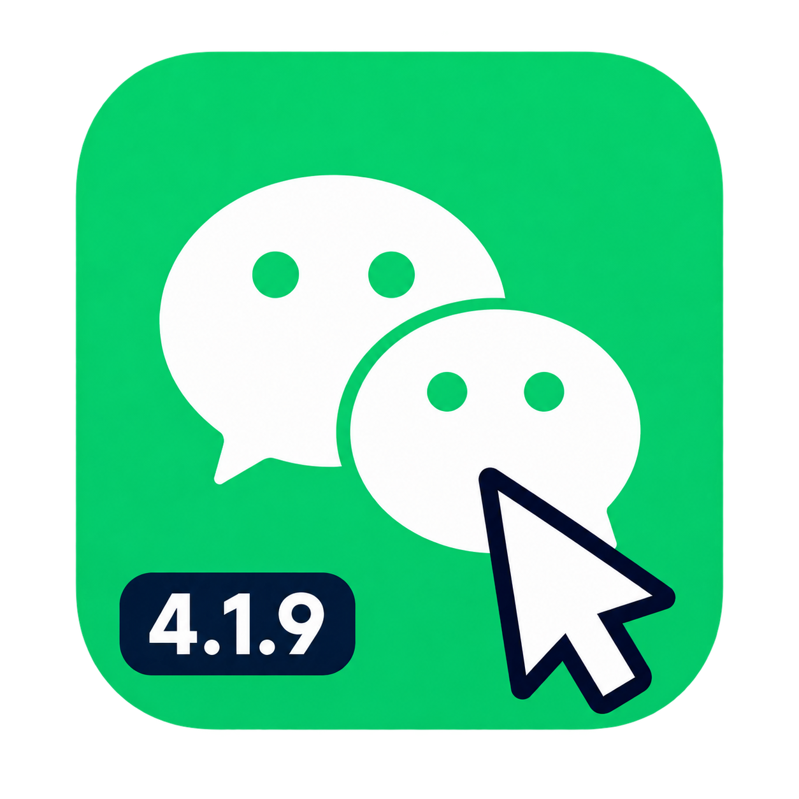

副本使用带鼠标箭头和版本标记的图标。主微信图标保持原样。
ICNS 包含 16、32、128、256、512 点及其 Retina 尺寸。安装器使用固定 SHA-256 校验后应用。
d6fefdd0ecd48defba4f3b8e876b1bf7ad7aef9d9122050af4385305abcacd91
使用内置图像编辑工具，先合成鼠标箭头和版本标记，再移除外圈背景。以本机微信 4.1.9 图标为编辑源。PNG 经系统 sips 和 iconutil 转换为 ICNS。
Use case: precise-object-edit. Edit target is the supplied original WeChat macOS icon. Produce an actual installable app icon for a user's separate automation-tool clone, not a mockup. Retain the recognizable original green rounded square and both white speech bubbles unchanged as much as possible. Add a large unmistakable computer mouse arrow cursor in the bottom right, pointing northwest/up-left: white fill, thick dark navy outline, crisp conventional mouse pointer silhouette. It should overlap the lower speech bubble and green tile, with enough contrast to stand out at 32px Dock size. Also add a compact dark navy rounded badge reading exactly "4.1.9" in bold white sans-serif at the bottom left inside the tile. Prioritize the pointer over the version badge. Preserve the original square canvas and inset rounded-tile footprint. Keep the empty area outside the tile truly transparent (alpha), do not fill it black/white/checkerboard. Flat crisp native icon finish; no added scenery, platform frames, text other than "4.1.9", glow, decorative gradients or drop shadows. Return one 1024x1024 PNG icon with transparent outer margins.
Background extraction only for an installable macOS app icon. Preserve the supplied green rounded-square WeChat icon, two white bubbles, dark navy/white cursor, and exact 4.1.9 badge without any redesign. Remove ONLY the gray-and-white checkerboard surrounding the rounded green tile. It is a fake transparency pattern and must not be visible in the delivered asset. Return an RGBA PNG with genuine transparent alpha pixels outside the existing rounded green tile. Do not redraw the checkerboard. Do not replace it with a solid background. Do not change any content within the green tile. Transparent background required, one centered square icon.
{kind=link}